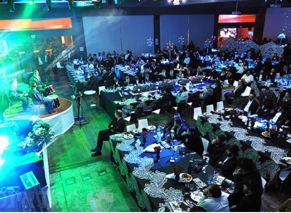

A Powerful and Moving Dinner for Yeshivas Chanoch Lenaar

Businessmen, public figures, contributors, friends and graduates of Yeshivas Chanoch LeNaar came to a special dinner held on Wednesday, the 24th of Adar, at the Tel Aviv Fairgrounds, as a salute to ten years of activities by the yeshiva and its institutions.
Guests of honor participating in the event that evening included Rabbi Yona Metzger, chief rabbi of Israel, Rabbi Mordechai Shmuel Ashkenazi, rav of Kfar Chabad, Rabbi Yosef Yitzchak Wilschanski, one of the Rebbe’s shluchim in Eretz HaKodesh and the head of Yeshivas Chassidei Chabad in Tzfas, and Rabbi Yeshayahu Hertzel, chief rabbi of Natzrat Ilit, alongside representatives of the Israel Ministries of Education, Industry, Trade, and Welfare, the Ort Sci-Tech Schools Network, the Yedidim Fund of Toronto, and others.
The guests were welcomed by the rosh yeshiva, Rabbi Eliezer Wilschanski, and the director-general of Chanoch LeNaar Institutions, Rabbi Shneur Lipsker.
During the evening, speeches were delivered by representatives of the rabbinate and the government of Israel, and the invited guests watched a detailed multimedia production on the yeshiva and its programs.
Ort Network executive director Tzvi Peleg stated that he is doing everything possible to enable Chanoch LeNaar Institutions to train young ultra-Orthodox men for the workforce, while stringently observing the principles of the chareidi community. He also declared that his organization would be making a sizable donation to the yeshiva in honor of the event.
The Mayor of the City of Tzfas, the Hon. Ilan Shochat, proudly announced that Tzfas had been awarded a special prize in education for its video presentation on the Ort-Chabad technological institute. He noted that this honor was a source of great pride for the entire city.
The climax of the evening came when Chanoch LeNaar rosh yeshiva Rabbi Eliezer Wilschanski announced on behalf of the yeshiva administration and faculty that they would soon be accepting more students. He called upon the institution’s growing circle of friends and supporters to assist in opening the gates of opportunity to all those interested in participating in this program.
The Chanoch LeNaar Troupe entertained the crowd with a special artistic production. They invited vocalist Yishai Lapidut to join them in singing “Aleh Katan”. This song aptly symbolizes the students’ successful achievements, thanks to the faith and inspiration they receive from Chanoch LeNaar. This was followed by a professional on-stage tambourine performance, later accompanied by Music School singing star Ilay Avidani, and the Shai Barak orchestra.
Michoel Caplin Productions. Photos: Yisroel Berdugo.
Beis Moshiach (staff). "A Powerful and Moving Dinner for Yeshivas Chanoch Lenaar." Beis Moshiach, no. 876 (April 16, 2013).